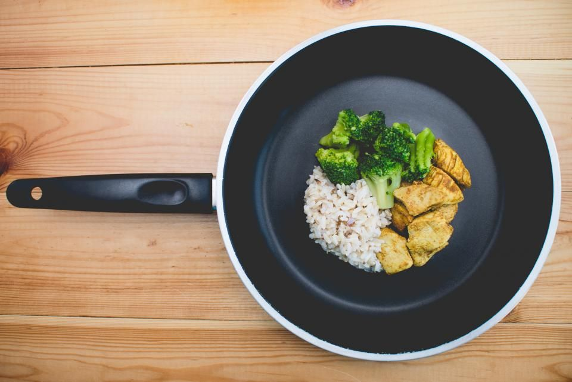

Takeaway & parcel
Pack meals for home or office with easy pickup.
Preview made for Kakal Kai Ruchi by adris.tech - not their official website
Homely meals in JP Nagar 6th Phase, Bengaluru
Kakal Kai Ruchi serves fresh, everyday food in a simple setting. Locals drop by for lunch or a quick dinner. The kitchen focuses on comfort and flavour.
Pack meals for home or office with easy pickup.
Sample photos - your own photos of Kakal Kai Ruchi go here.

JP Nagar 6th Phase, JP Nagar, JP Nagar, Bengaluru.
Listed on Eazydiner, Justdial, Zomato.
JP Nagar 6th Phase, JP Nagar, JP Nagar, Bengaluru
Please call ahead to confirm
Tell us what you need and pick a time.
JP Nagar 6th Phase, JP Nagar, JP Nagar, Bengaluru
Call ahead for larger groups.
JP Nagar 6th Phase, JP Nagar, JP Nagar, Bengaluru.
Call us, or email kakalkairuchi@gmail.com.
Please call before you visit to confirm today's timings.
Takeaway & parcel.
Drop by for a hearty meal or order online from your favourite platform.
adris.tech designed it as a free sample. The buttons are switched off while it is a preview. Like it? We can make it your official website - with your own photos, your timings and online booking.